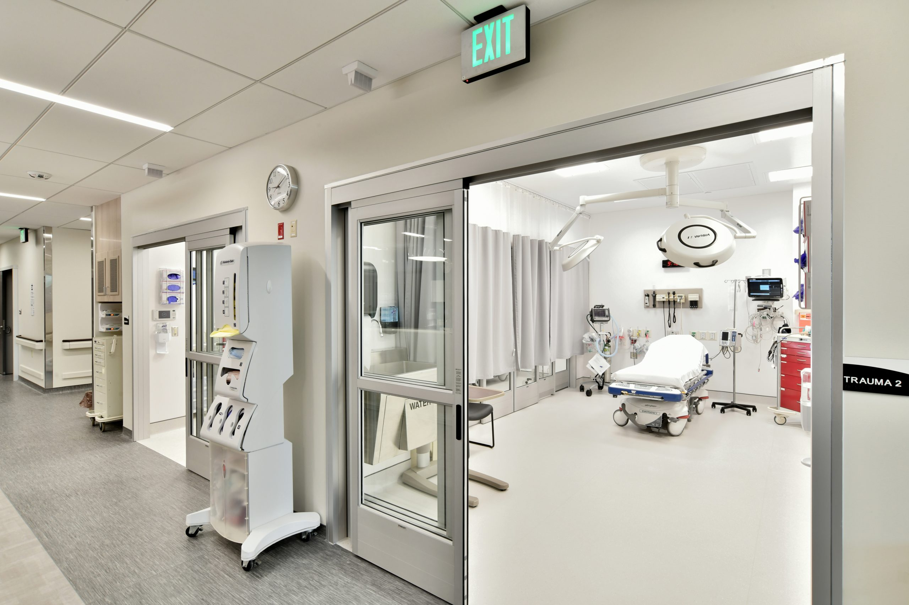

Diagnostic Services
We provide a complete range of diagnostic facilities including pathology labs, radiology (MRI, CT scan, X-rays), and nuclear medicine with expert interpretation and rapid turnaround.
Inpatient & Outpatient Care
Our inpatient services include private rooms and ICU facilities, while outpatient services provide consultations, follow-ups, and minor procedures in a comfortable setting.
Emergency Services
24/7 emergency services are available with trained emergency physicians and rapid response teams, ensuring timely management of critical conditions and trauma.
Pharmacy Services
Our on-site pharmacy ensures availability of cancer and supportive medicines. We maintain cold-chain logistics and offer consultation regarding medication use.
Telemedicine
Patients from remote areas can consult our specialists through a robust telemedicine system for follow-up care and second opinions without visiting physically.
Hospital Branches & Lab Locations
SKMCH&RC Lahore:
7A Block R-3, Johar Town, Lahore.
Phone: +92 42 3590 5000
Email: info@skm.org.pk
SKMCH&RC Peshawar:
Hayatabad, Phase 5, Peshawar.
Phone: +92 91 588 5000
Email: info.peshawar@skm.org.pk
SKMCH&RC Karachi (under construction):
Korangi Creek, Karachi.
Email: info.khi@skm.org.pk
Diagnostic Labs & Collection Centres:
Over 100 collection centers nationwide in major cities like Islamabad, Faisalabad, Gujranwala, Sialkot, Multan, Rawalpindi, Quetta, etc. Services include routine and specialized tests with online reporting and home sampling.
For lab inquiries:
Phone: 0800 11 555
Email: labs@skm.org.pk